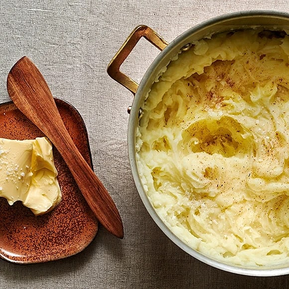

mos recept

Fluffigt Mos
Ingredienser
- Potatis
- Mjölk
- Smör
- Salt och Peppar
- muskot(optional)
Tillagning
- Skala potatis
- Koka Potatis
- pressa potatisen
- Värm Mjölk och smör
- Häll i vätskan i potatisen och rör om
- Riv i muskot(optinal)
- Smaksätt med salt och peppar